Esashi
Esashi · Hokkaido
Esashi
Highlighted on the Hokkaido map.
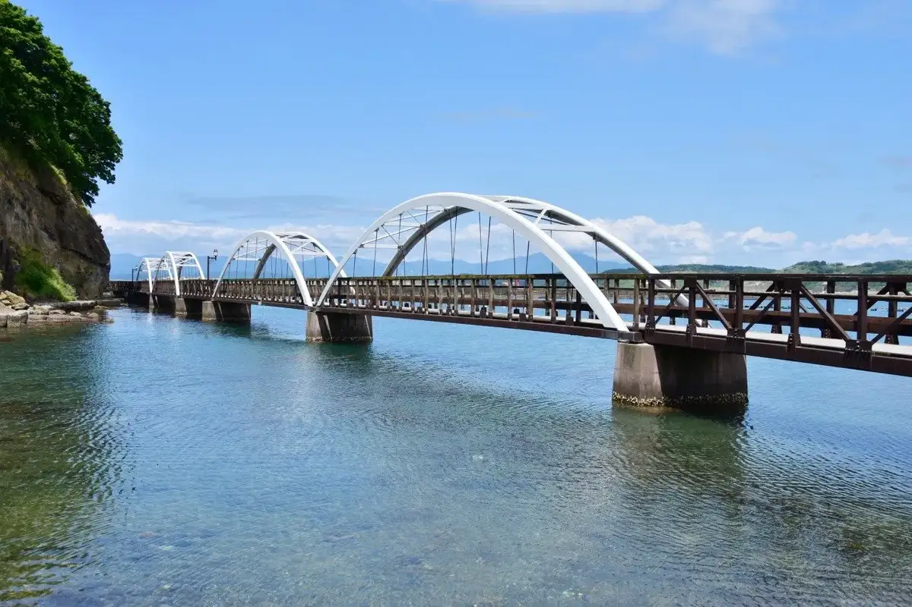
Stay
レンタルハウスいにしえ別庭
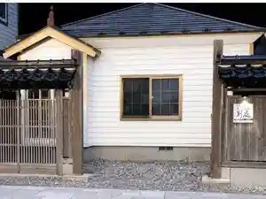
Rentaruhausu Inishie Betsu Niwa
レンタルハウスいにしえ
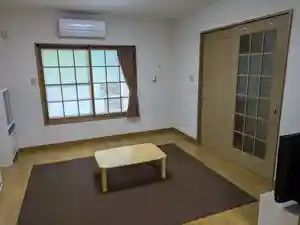
Rentaruhausu Inishie
ホテルニューえさし
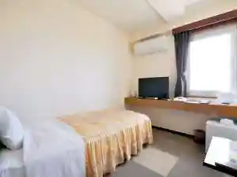
Hoterunyuu Esashi
旅庭 群来
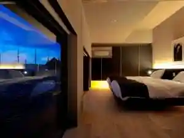
Tabi Niwa Kuki
Dining
Horizoん
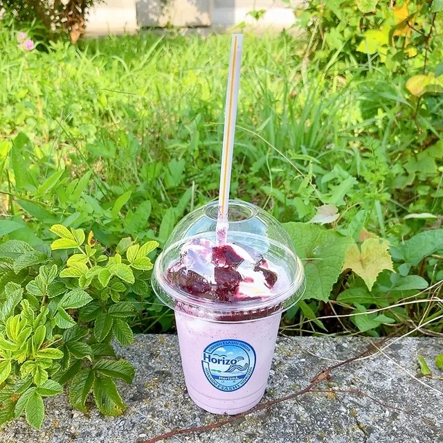
Horizo N
ひょうたん
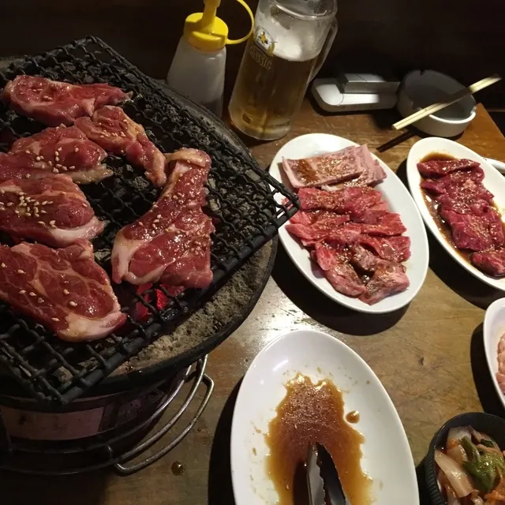
Hyoutan
江差 旅庭 群来
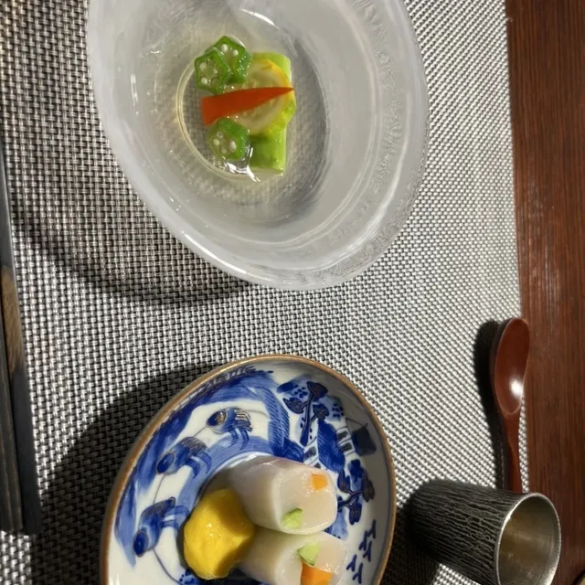
Esashi Tabi Niwa Kuki
ふじや旅館
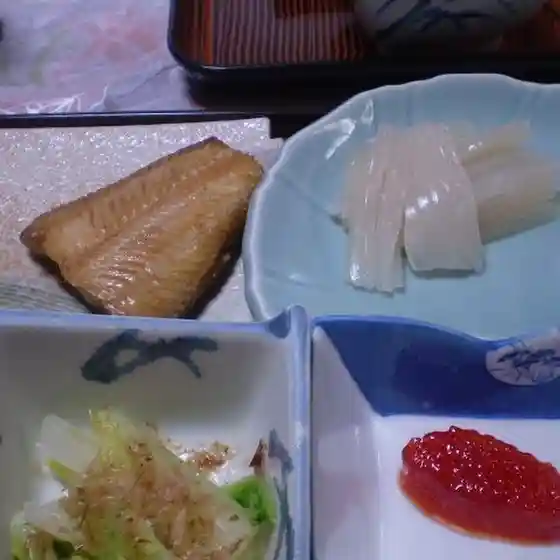
Fujiya Ryokan
茶房せき川
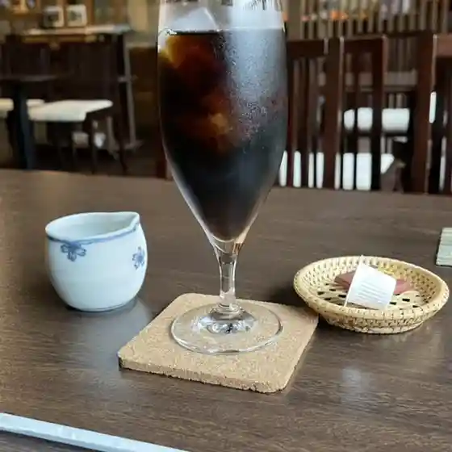
Sabou Seki Kawa
あすなろパン
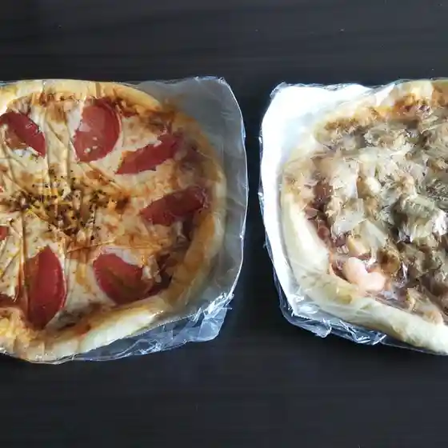
Asunaro Pan
チャイニーズレストラン 美華
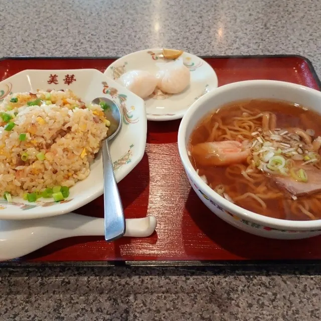
Chainiizuresutoran Mika
藤谷漁業部
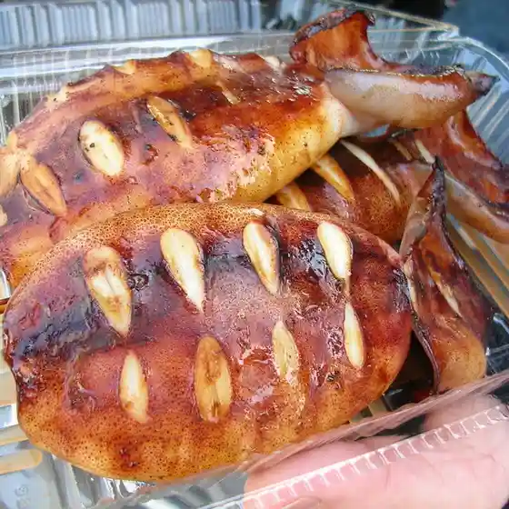
Fujitani Gyogyou Bu
セブンイレブン 江差茂尻町
Sebun'Irebun Esashi Mojiri Machi
手打ちそば和味
Teuchi Chisoba Wa Aji
いろは
Iroha
つるみ食堂
Tsurumi Shokudou
薫風
Kunpuu
麺や 壱
Men Ya Ichi
たんぽぽ
Tanpopo
辻旅館
Tsuji Ryokan
前田製菓
Maeda Seika
吉田酒店
Yoshida Saketen
八寶
Happou
セイコーマート 江差新地店
Seikoomaato Esashi Shinchi Mise
喫茶モネ
Kissa Mone
ささなみ精肉店
Sasanami Seinikuten
鮨紋
Sushi Mon
磯屋
Iso Ya
Sights
Kamome Shima
Kamome Shima
Ubagami Dai Shrine Esashi Ubagami Daijin Miya Togyo Matsuri
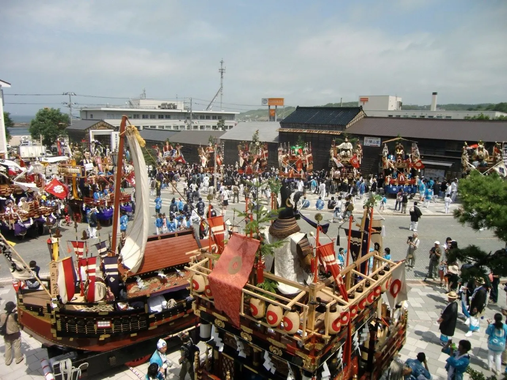
Ubagami Dai Shrine Esashi Ubagami Daijin Miya Togyo Matsuri
Esashi Inishie Kaido
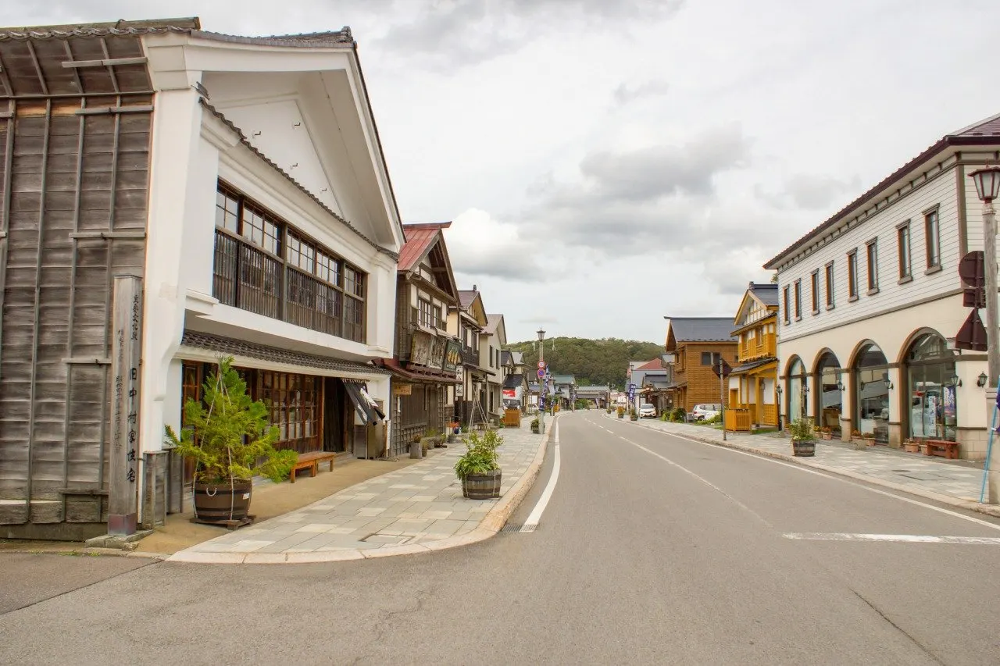
Esashi Inishie Kaido
Esashi Oiwake Hall Esashi Dashi Hall
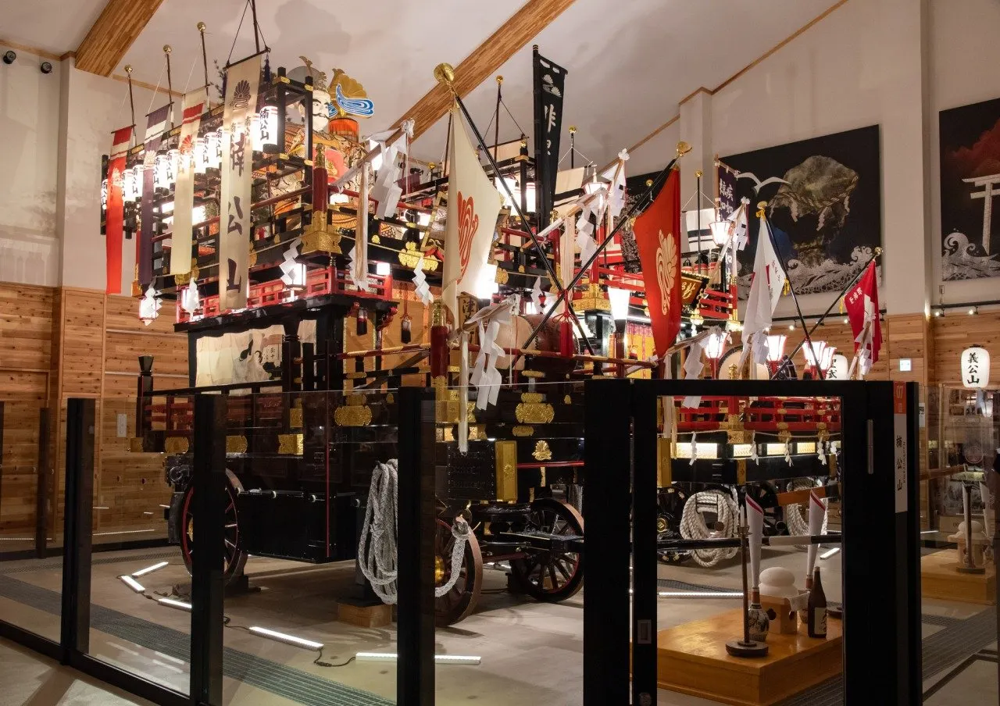
Esashi Oiwake Hall Esashi Dashi Hall
Kyu Naka Village Ie House
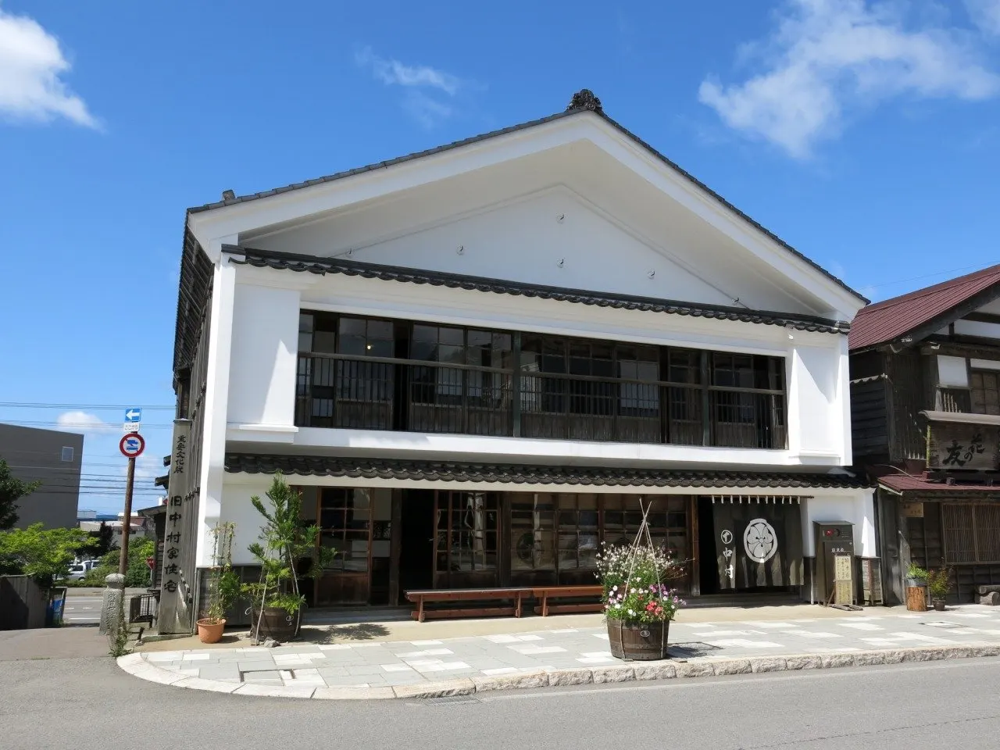
Kyu Naka Village Ie House
Go Katte Ya Honpo
Go Katte Ya Honpo
Kyu Hiyama Nishi Gun Yakusho
Kyu Hiyama Nishi Gun Yakusho
Gaku Castle Mountain Shogaku In
Gaku Castle Mountain Shogaku In
Sei Ozan Hokke Temple
Sei Ozan Hokke Temple